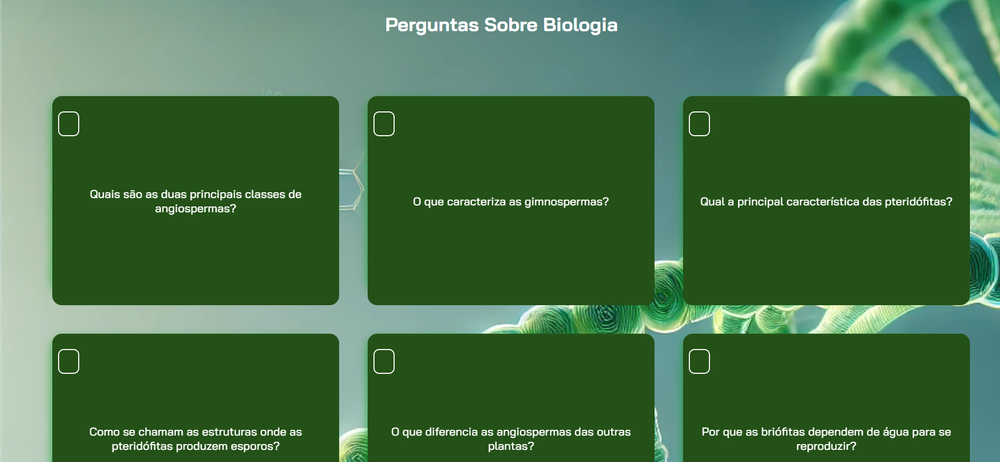
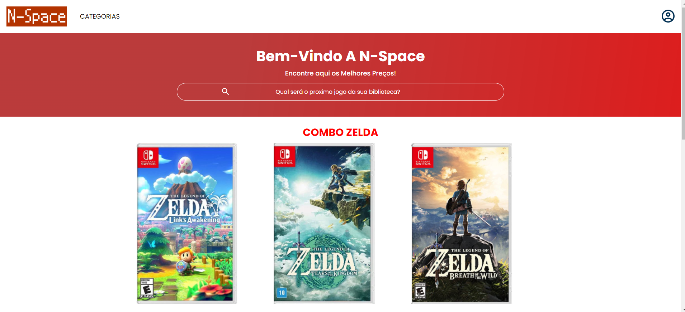

Meus projetos

Flashcards Sobre Biologia: Para fins de ensino.
Este projeto é uma página web que apresenta uma lista de perguntas sobre biologia, incluindo animações em Java. A página é estilizada com CSS para uma visualização agradável e usa fontes externas do Google Fonts.

N-Space: A Loja de Jogos Eletrônicos Oficial da Nintendo.
Este projeto é uma loja para venda de jogos e produtos da Nintendo, permitindo que as pessoas façam compras de maneira segura e da comodidadidade de seus lares.
Mega Duolingo: Divulgação de um Plano de Assinatura.
Este projeto Scratch cria uma experiência para o comprador do plano, permitindo aos usuários indentificarem informações claras sobre os benefícios, preços, etc. De forma interativa e de fácil acesso.